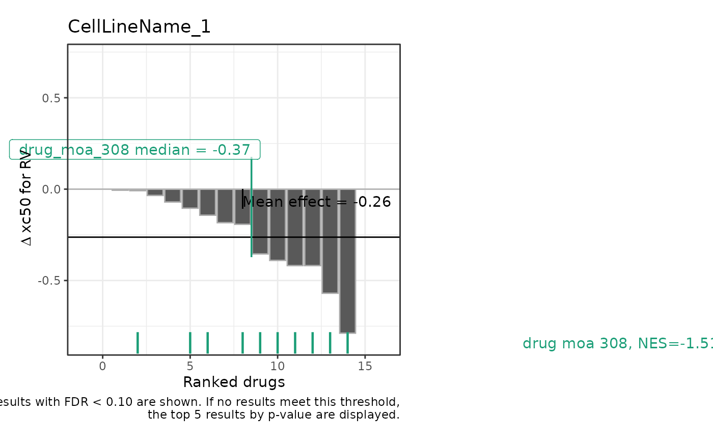

Plot Chemical Genomics Screen GSEA Results
plot_cgs_ranking.RdGenerates a ggplot2 visualization of chemical genomics screening data, highlighting GSEA results.
Usage
plot_cgs_ranking(
results,
cl_name,
metric,
padj_threshold = 0.1,
top_results_no_sig = 5,
max_results_with_sig = 15
)Arguments
- results
A list object returned from `analyze_cgs`.
- cl_name
A string specifying the cell line included in the
resultsto prepare a visualization.- metric
A string specifying the metric included in the
resultsto prepare a visualization.- padj_threshold
A numeric value specifying the threshold for filtering significant GSEA results based on adjusted p-value.
- top_results_no_sig
A numeric value specifying the number of top results to plot if there are no significant values.
- max_results_with_sig
A numeric value specifying the maximum number of results to plot when there are more than this number of significant values.
Author
Bartosz Czech czech.bartosz@external.gene.com
Examples
dt_metrics <- qs2::qs_read(system.file("testdata/cgs_data.qs2", package = "gDRplots"))
results <- analyze_cgs(dt_metrics, metrics = c("xc50"), cl_name = "CellLineName_1")
#> In `dt_metrics` some xc50 values are infinite.
plot_cgs_ranking(results,
cl_name = "CellLineName_1",
metric = "xc50",
padj_threshold = 0.1,
top_results_no_sig = 5,
max_results_with_sig = 15)
